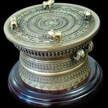

铜鼓

铜鼓是产生、流行于我国西南和岭南地区的富有传奇色彩的历史文物，一些民族曾把它作为财富和权力的象征，又把它当作能消灾降福的“神器”。同时，铜鼓又是一种综合艺术品，它从不同的侧面反映了铸造铜鼓的民族经济状况、文化面貌和心理素质，是一部不成文的民族历史百科全书。
中原地区青铜时代的铜鼎与红水河流域各民族使用的铜鼓，都是由新石器时代的陶釜演变而成。然而，鼎在失去作为权力象征的功能之后便变成了历史文物，铜鼓则在失去作为权力象征的功能之后回到了民众中，至今仍在民间使用，是活着的文化。红水河流域流域各民族的传统文化活动如节日文化、民间宗教祭祀文化、民间娱乐文化等，都使用铜鼓。如东兰、天峨、南丹等县壮族举行的蛙婆节、南丹县瑶族的丧葬仪式以及建造新房等，都离不开铜鼓。因此，铜鼓文化成为这些民族现存的文化传统的活的见证。它从不同的侧面反映了红水河流域使用铜鼓的民族的经济状况、文化面貌和心理素质，体现了他们在漫长的历史长河中适应自然环境而所具有的独特的创造力。